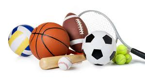
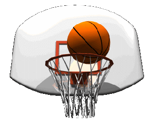
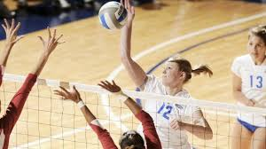
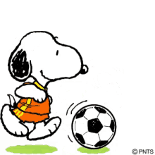
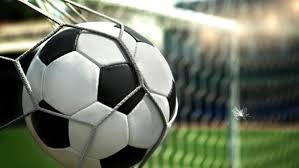
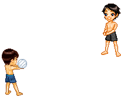
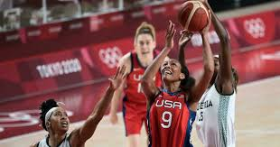

MIS DEPORTES FAVORITOS
|  | Mis: A mi me gustan muchos los deportes. Soy una persona muy activa,pero aqui les voy a contar
solo sobre algunos de ellos. |
| BASQUETBOL |  |
|  | Me gusta jugar basquetbol. Tengo muchos amigos con quienes me reuno varias veces al mes para practicar este deporte. La agilidad, los reflejos, la rapidez, el sentido de la posición, la dosificación del esfuerzo, la firmeza especialmente en los útimos momentos del partido, cuando la reflexión en un lanzamiento o canasto puede ser decisivo y la
precisión, son cualidades que distinguen a cada jugador de basquetbol. |
| FUTBOL |  |
|  | El fútbol es el deporte más popular del mundo, tanto al número de espectadores, como al número de
participantes. A los mexicanos no encanta jugar futbol. Somos aficionados y vamos frecuentemente al estadiopara jugar o
para
apoyar a nuestro equipo favorito, Yo no Juego solamente, sino que veo con avidez los partidos que se transmiten por televisión.
Las competencias a nivel nacional y mundial y los torneos para la Copa del Mundo son mi pasión. |
| VOLEIBOL |  |
|---|
|  | El voleibol es uno de los juegos Olimpicos. Creo que cada uno ha jugado alguna vez en este deporte. Mi novio va seguido a jugar voleibol y yo lo acompaño. Conozco bien a todos sus compañeros, de hecho tienen un muy buen
equipo.
Este verano ellos piensan ir a competir con otros equipos en el extranjero. A mi me ha tocado jugar voleibol en la playa y me
he
sentido muy agusto. |
| Y a ti ¿que deporte te gusta? | Regresar al
|